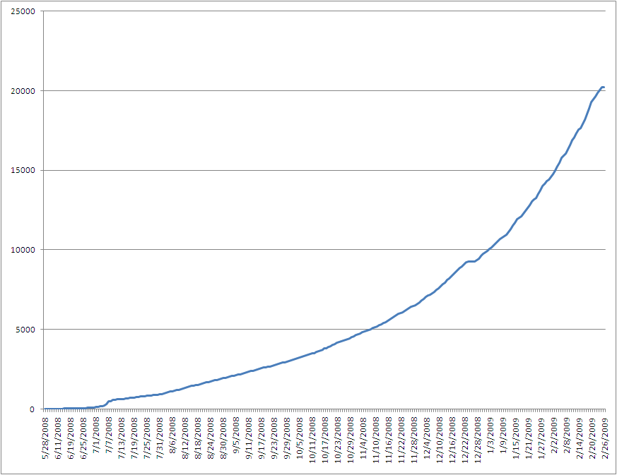
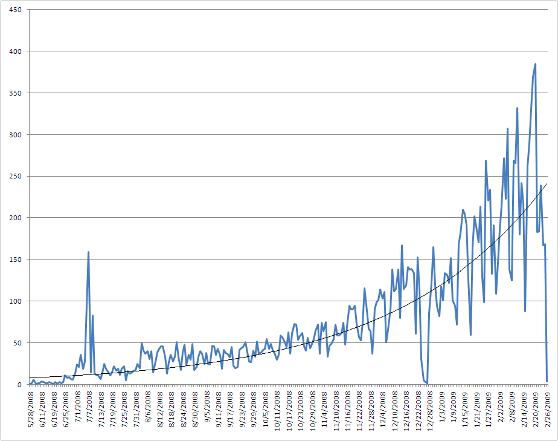

Ok, there are now more than 20,000 applications in the App Store. Amazing.

And to give you a bit of perspective, it took 155 days to get the first 5,000 application. Getting from 15,000 to 20,000 took just 23 days. Getting from 20,000 to 25,000 will now take less than 20. The continued growth, especially now that we’re past the holidays really is staggering.

And in case you’re wondering what the first application in the App Store was, here are the first 10 applications that were available in the App Store.
| Date | Name | Genre | Price |
|---|---|---|---|
| 5/28/2008 | AIM | Social Networking | $0.00 |
| 5/29/2008 | Evernote | Productivity | $0.00 |
| 5/29/2008 | nikoli SUDOKU Vol.01 | Games | $1.99 |
| 5/30/2008 | AOL Radio | Music | $0.00 |
| 5/30/2008 | Bloomberg | Finance | $0.00 |
| 5/30/2008 | TypePad | Social Networking | $0.00 |
| 5/30/2008 | Aqua Forest - Powered By Octaveengine Casual | Games | $7.99 |
| 5/30/2008 | Bomberman Touch - The Legend of Mystic Bomb | Games | $7.99 |
| 5/30/2008 | Frommers San Francisco | Travel | $9.99 |
| 6/2/2008 | Photobucket for iPhone | Photography | $0.00 |
AIM was the first application for the iPhone- amazing.
If you’re curious, take a look for yourself- here is the latestdata[.xls file] from this morning. Feel free to use it to do your own analysis, just drop me a line with your results!